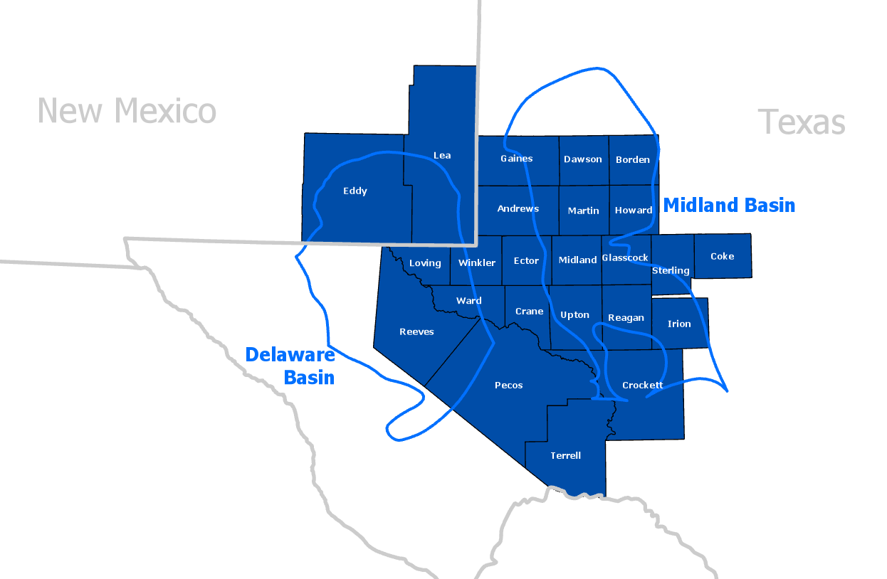

Praesidium Oil Co. and its affiliates are primarily interested in acquiring mineral and royalty interests in the following Texas counties: Andrews County, Reagan County, Culberson County, Borden County, Coke County, Crane County, Crockett County, Dawson County, Ector County, Gaines County, Glasscock County, Howard County, Irion County, Loving County, Martin County, Midland County, Pecos County, Reeves County, Sterling County, Terrell County, Upton County, Ward County, and Winkler County, Texas.
Although our primary focus is within the Permian, we will also evaluate mineral interests and royalty interests outside of our core position.
If you would like to discuss our transaction process, please call, email or contact us. We would love to hear from you.
